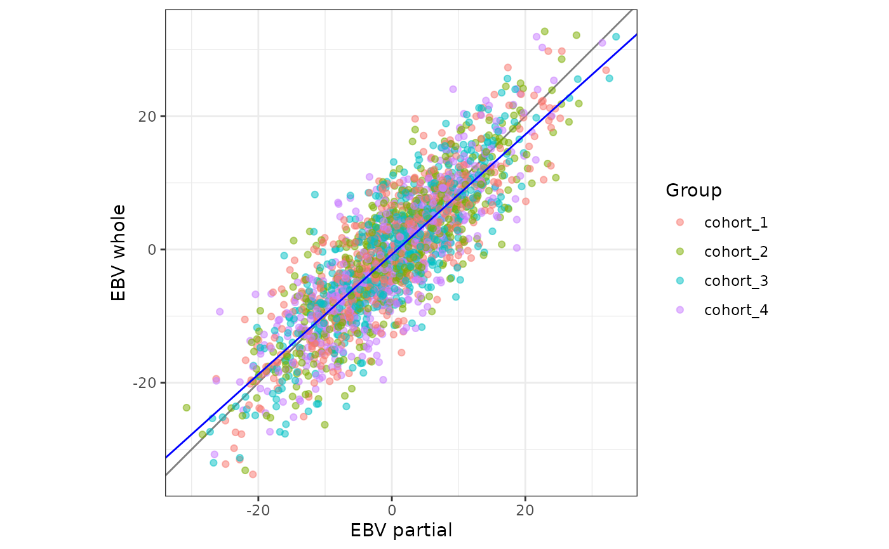

Validate EBVs with the LR method for several groups
Source:R/validate_lr_by_group.R
validate_lr_by_group.RdRuns validate_lr() on each group of animals and collects the statistics
and the plots in one result. A group that fails never stops the others.
Usage
validate_lr_by_group(
partial,
whole,
groups,
var_a = NULL,
average_inbreeding = NULL,
inbreeding = NULL,
split_labels = FALSE,
include_all = TRUE,
plot = FALSE,
plot_verbose = FALSE,
plot_subgroups = FALSE,
plot_in_gsd = FALSE,
bootstrap = FALSE,
n_boot = 10000L,
ncpus = 1L,
verbose = TRUE
)Arguments
- partial
A data frame with animal IDs in column 1 and EBVs from the partial evaluation in column 2. Other columns are ignored. A data.table or a tibble also works.
- whole
A data frame with animal IDs in column 1 and EBVs from the whole evaluation in column 2. Other columns are ignored. A data.table or a tibble also works.
- groups
Data frame with the animal IDs in column 1 and one column per group. The column name is the name of the group. A column is either logical (
TRUEfor the animals in the group,FALSEorNAfor the rest) or text (a label for the animals in the group,NAfor the rest). Text columns that only hold "TRUE" and "FALSE" are read as logical. An animal can be in several groups by being labelled in different columns.- var_a
Optional single positive number: the additive genetic variance. Needed for the level bias in genetic standard deviations, for the accuracy of the partial EBVs, and for
plot_in_gsd. Defaults toNULL.- average_inbreeding
Optional single number in [0, 1): the average inbreeding of the validation animals as a coefficient, not a percentage (
0.05, not5), used for the accuracy of the partial EBVs. Provide eitheraverage_inbreedingorinbreeding, not both. Defaults toNULL.- inbreeding
Optional data frame with animal IDs in column 1 and inbreeding coefficients (numbers of at least 0, as coefficients and not percentages) in column 2. It must include every validation animal; other animals are ignored. Use it instead of
average_inbreedingwhenbootstrap = TRUE, so that the average inbreeding is recomputed in every resample. Defaults toNULL.- split_labels
Logical. If
TRUE, each label of a text column is also run as a group of its own, namedcolumn: label, next to the group of the whole column (see the example under Groups in the details). Defaults toFALSE.- include_all
Logical. If
TRUE, the group"all"is also run, with all animals found in bothpartialandwhole. IfTRUE, no column ofgroupscan be named"all". Defaults toTRUE.- plot
Logical. If
TRUE, also build a ggplot2 scatter plot of the whole EBVs on the partial EBVs for each group. Defaults toFALSE.- plot_verbose
Logical. If
TRUE(andplot = TRUE), add the number of animals and the main statistics to the plot. The level bias is shown in genetic standard deviations whenplot_in_gsd = TRUE, and in the units of the EBVs otherwise. Defaults toFALSE.- plot_subgroups
Logical. If
TRUE, the points of a group from a text column are coloured by its labels in the plot. At least one group column must be text. Defaults toFALSE.- plot_in_gsd
Logical. If
TRUE(andplot = TRUE), both axes are divided by the genetic standard deviation,sqrt(var_a), so that the plot is in genetic standard deviations. It needsvar_a. Defaults toFALSE: the axes are in the units of the EBVs.- bootstrap
Logical. If
TRUE, standard errors are estimated by bootstrapping over animals with replacement. Defaults toFALSE.- n_boot
A single whole number of at least 2: the number of bootstrap resamples. Defaults to
10000.- ncpus
A single whole number of at least 1: the number of CPUs used for the bootstrap. Defaults to
1, which runs serially.- verbose
Logical. If
TRUE, name each group as it runs, show its messages, warnings and errors, and show a summary at the end. Defaults toTRUE.
Value
A list with three elements:
stats: a data frame in long format, one row for each group and statistic, with the columnsgroup,statistic,valueandSE(withSEbeingNAunlessbootstrap = TRUE). A group that failed has no rows.groups: a data frame with one row for each group, with the columnsgroup,n_provided(IDs listed in the group),n(animals used, i.e. animals being found in both evaluations),status("ok", "warning" or "failed") andmessage(the associated error or the warnings, empty when the status is "ok").plots: a named list with one ggplot for each group. It is empty unlessplot = TRUE, and has no entry for a group that failed.
Groups
Each group is validated on its own with validate_lr(), so the statistics
are those described there. A text column keeps its labels for the plot only:
the statistics of the group use all its animals together. To get statistics
for each label, use split_labels = TRUE. For example, a text column
genotyped with the labels male and female is run as the group
genotyped (all its animals together). With split_labels = TRUE, it is
also run as the groups genotyped: male and genotyped: female.
The group "all"
With include_all = TRUE, the first group is "all": every animal found in
both partial and whole, whether or not it is in any group column. Its
statistics are those of a plain validate_lr() call. Because "all" is the
name of this group, a column of groups cannot be named "all" while
include_all = TRUE. Set include_all = FALSE when the validation of all
animals together (the group "all") is not wanted, for example to save time
with the bootstrap.
Variance and inbreeding
One variance var_a and one set of inbreeding values are used for all groups.
IDs, errors and warnings
IDs are compared as text, so numeric and text IDs match. IDs in a group that
are not in both partial and whole are counted in n_provided but not
used. The IDs of groups must be unique and not missing, and so must the
names of its group columns. With split_labels = TRUE, no column can be
named like a group that this adds (column: label).
A group that stops with an error gets the status "failed" and its message
is stored in groups. Other groups will still run. A group that finishes with
warnings gets "warning", keeps its statistics, and its warnings are stored in
message. When any group needs attention from the user, one warning at the
end names these groups.
Examples
p <- toy_validation[, c("id", "partial")]
w <- toy_validation[, c("id", "whole")]
# one logical column for two cohorts, and a text column with all cohorts
groups <- data.frame(
id = toy_validation$id,
cohort_1 = toy_validation$group == "cohort_1",
cohort_2 = toy_validation$group == "cohort_2",
cohort = toy_validation$group
)
res <- validate_lr_by_group(p, w, groups, var_a = 300, verbose = FALSE)
res$groups
#> group n_provided n status message
#> 1 all 2000 2000 ok
#> 2 cohort_1 516 516 ok
#> 3 cohort_2 468 468 ok
#> 4 cohort 2000 2000 ok
res$stats[res$stats$statistic == "rho", ]
#> group statistic value SE
#> 5 all rho 0.8500000 NA
#> 11 cohort_1 rho 0.8551642 NA
#> 17 cohort_2 rho 0.8535824 NA
#> 23 cohort rho 0.8500000 NA
# one plot for each group; the group "cohort" is coloured by its labels
res_plot <- validate_lr_by_group(
p, w, groups, var_a = 300, plot = TRUE, plot_subgroups = TRUE,
verbose = FALSE
)
res_plot$plots$cohort
